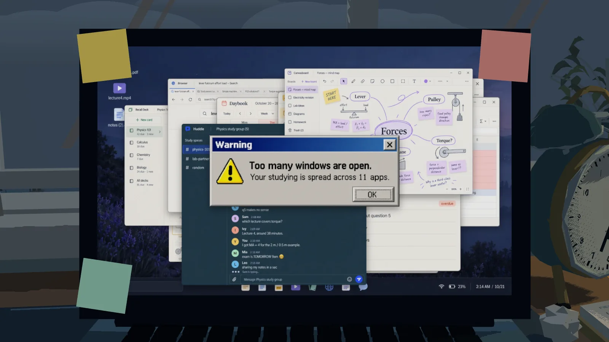
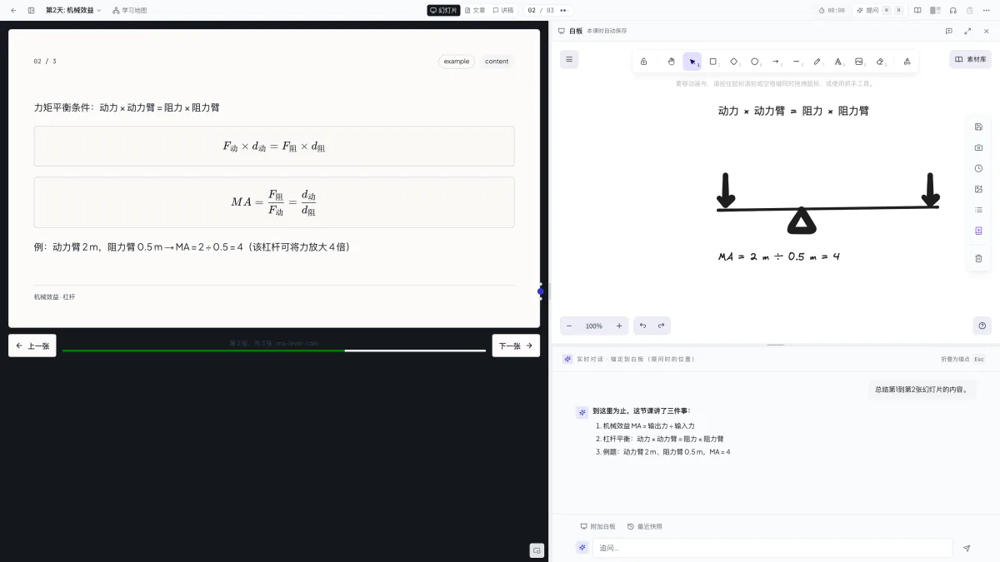
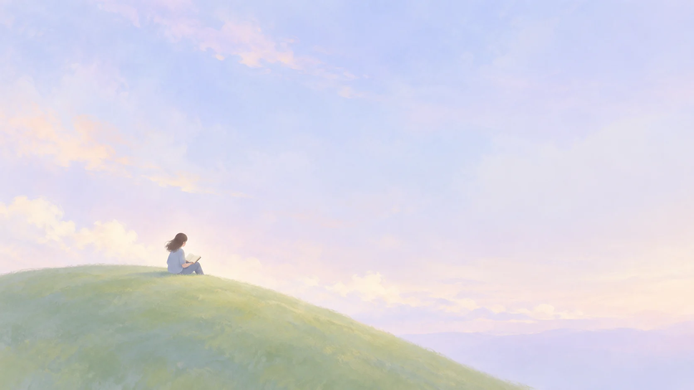
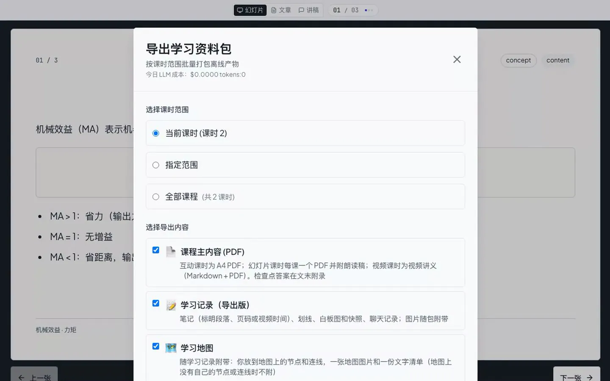

早晨，一张整齐的书桌。

一天又一天，窗口越开越多，桌面越来越乱。

Too many windows are open.

抬头，推开窗。

飞上黎明的天空。

早晨，一张整齐的书桌。
一天又一天，窗口越开越多，桌面越来越乱。

Too many windows are open.
抬头，推开窗。
飞上黎明的天空。

第一幕 · 设置
接入你常用的 AI 助手，说出想学什么，排好顺序就能开始。
Claude Code、Codex 或 Claude Desktop 都可以，用的是你自己的订阅或 API Key。
一句“我想学杠杆原理”，或者一份 YAML、Markdown 大纲。
概念地图、每天学什么、哪天复习都摆在面前，改到满意再生成。
第二幕 · 学习
课件、白板、笔记和 AI 助教在同一屏，不用来回切换。

课件 白板 AI 助教课件、文章、讲稿，同一节课换着读；白板、笔记、助教按你习惯摆在一屏。
荧光笔留在原文上，笔记钉在那一页，回来时还在原位。
卡住了就在这一页问；要总结、要举例，不用换窗口。
想不通就画出来，草图和算式跟着这节课保存。
笔记、划线、对话一起搜，再在学习地图上看每节课留下了什么。
讲义、笔记、学习地图一起打包，文件在你自己的电脑上。

第三幕 · 复习
什么时候复习、先学什么，不靠感觉。每一种方法都写明了出处。
Knowledge tracing: Modeling the acquisition of procedural knowledge
每次作答，都会更新你掌握每个概念的概率。
1995
Test-enhanced learning: Taking memory tests improves long-term retention
课里穿插随堂测验，用回想代替重读。
2006
Assessment and classroom learning
测验压力小、次数多，答完马上看到解析。
1998
Memory: A contribution to experimental psychology
不复习就会忘，复习要赶在快忘之前。
1885
Distributed practice in verbal recall tasks: A review and quantitative synthesis
复习间隔从 1 小时拉长到 14 天，按你的作答排进清单。
2006
A taxonomy for learning, teaching, and assessing
题目针对理解、应用和分析，不只考记忆。
2001
论文和实现说明都写在源码里。
学完带走
文件都在你自己的电脑上。

第四幕 · 价值
开始使用
Aster 装在你自己的电脑上，不需要账号，断网也能学。
即将推出
准备好了会在这里公布。这个页面没有表单，也不放统计脚本。